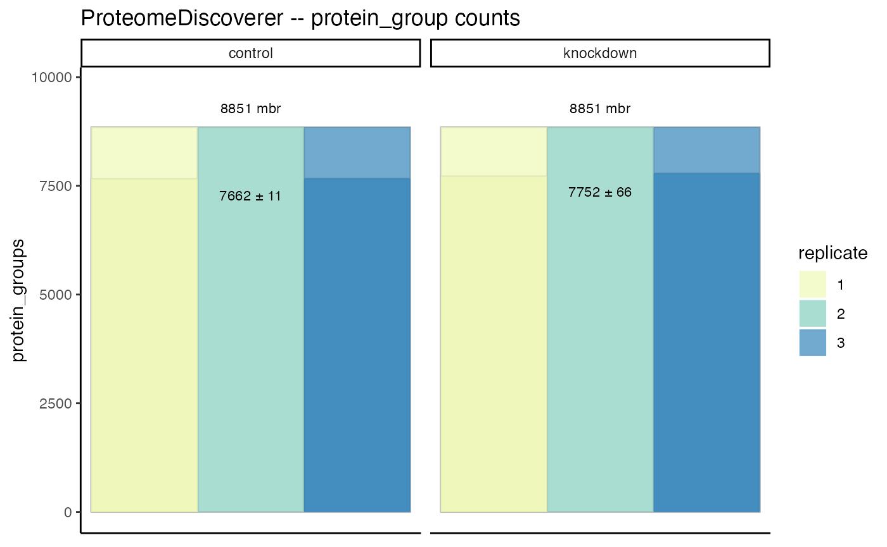
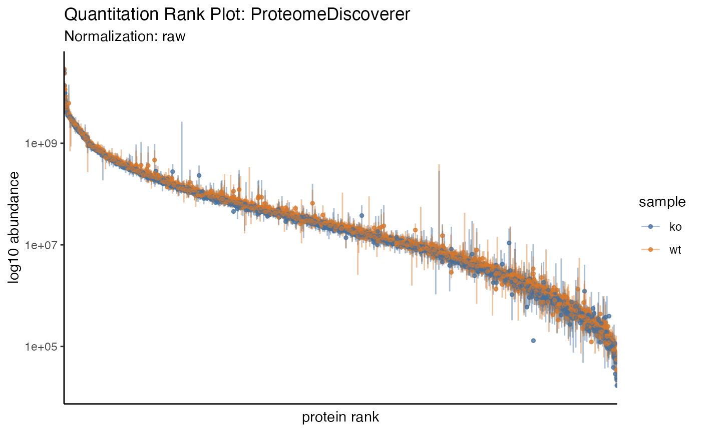
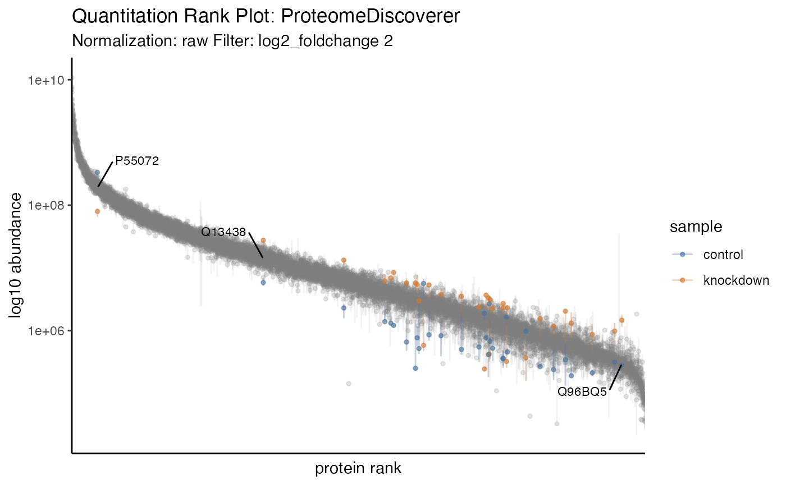
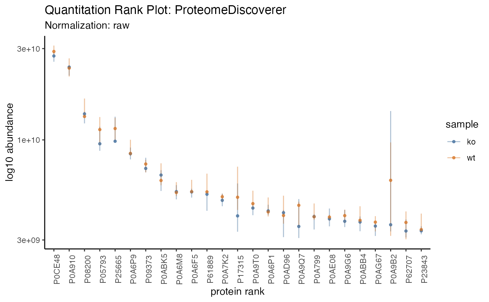

Summarizing
summarizing.RmdSummarizing proteomics data is vital to understanding the bigger
picture and conveying summary stats that set the tone for the larger
analysis. The results of each summary can be directed to via the
destination option to "print" on screen,
"save" to a file or "return" as a tibble.
Printing
The tidyproteomics data object can be printed to show a summary of the object contents.
hela_proteins
#>
#> ── Quantitative Proteomics Data Object ──
#>
#> Origin ProteomeDiscoverer
#> proteins (10.67 MB)
#> Composition 6 files
#> 2 samples (control, knockdown)
#> Quantitation 7055 proteins
#> 4 log10 dynamic range
#> 28.8% missing values
#> *imputed
#> Accounting (4) num_peptides num_psms num_unique_peptides imputed
#> Annotations (9) description biological_process cellular_component molecular_function
#> gene_id_entrez gene_name wiki_pathway reactome_pathway
#> gene_id_ensemble
#> And these can expand to encompass additions generated through other operations.
hela_proteins %>% expression(knockdown/control) %>% enrichment(knockdown/control, .term = 'biological_process')
#> ℹ .. expression::t_test testing knockdown / control
#> ✔ .. expression::t_test testing knockdown / control [3.6s]
#>
#> ℹ .. enrichment::gsea testing knockdown / control by term biological_process
#> Warning in preparePathwaysAndStats(pathways, stats, minSize, maxSize,
#> gseaParam, : All values in the stats vector are greater than zero and scoreType
#> is "std", maybe you should switch to scoreType = "pos".
#> Warning in preparePathwaysAndStats(pathways, stats, minSize, maxSize,
#> gseaParam, : All values in the stats vector are greater than zero and scoreType
#> is "std", maybe you should switch to scoreType = "pos".
#> Warning in preparePathwaysAndStats(pathways, stats, minSize, maxSize,
#> gseaParam, : All values in the stats vector are greater than zero and scoreType
#> is "std", maybe you should switch to scoreType = "pos".
#> Warning in preparePathwaysAndStats(pathways, stats, minSize, maxSize,
#> gseaParam, : All values in the stats vector are greater than zero and scoreType
#> is "std", maybe you should switch to scoreType = "pos".
#> Warning in preparePathwaysAndStats(pathways, stats, minSize, maxSize,
#> gseaParam, : All values in the stats vector are greater than zero and scoreType
#> is "std", maybe you should switch to scoreType = "pos".
#> Warning in preparePathwaysAndStats(pathways, stats, minSize, maxSize,
#> gseaParam, : All values in the stats vector are greater than zero and scoreType
#> is "std", maybe you should switch to scoreType = "pos".
#> Warning in preparePathwaysAndStats(pathways, stats, minSize, maxSize,
#> gseaParam, : All values in the stats vector are greater than zero and scoreType
#> is "std", maybe you should switch to scoreType = "pos".
#> Warning in preparePathwaysAndStats(pathways, stats, minSize, maxSize,
#> gseaParam, : All values in the stats vector are greater than zero and scoreType
#> is "std", maybe you should switch to scoreType = "pos".
#> Warning in preparePathwaysAndStats(pathways, stats, minSize, maxSize,
#> gseaParam, : All values in the stats vector are greater than zero and scoreType
#> is "std", maybe you should switch to scoreType = "pos".
#> Warning in preparePathwaysAndStats(pathways, stats, minSize, maxSize,
#> gseaParam, : All values in the stats vector are greater than zero and scoreType
#> is "std", maybe you should switch to scoreType = "pos".
#> Warning in preparePathwaysAndStats(pathways, stats, minSize, maxSize,
#> gseaParam, : All values in the stats vector are greater than zero and scoreType
#> is "std", maybe you should switch to scoreType = "pos".
#> Warning in preparePathwaysAndStats(pathways, stats, minSize, maxSize,
#> gseaParam, : All values in the stats vector are greater than zero and scoreType
#> is "std", maybe you should switch to scoreType = "pos".
#> Warning in preparePathwaysAndStats(pathways, stats, minSize, maxSize,
#> gseaParam, : All values in the stats vector are greater than zero and scoreType
#> is "std", maybe you should switch to scoreType = "pos".
#> Warning in preparePathwaysAndStats(pathways, stats, minSize, maxSize,
#> gseaParam, : All values in the stats vector are greater than zero and scoreType
#> is "std", maybe you should switch to scoreType = "pos".
#> ✔ .. enrichment::gsea testing knockdown / control by term biological_process [1…
#>
#> ── Quantitative Proteomics Data Object ──
#>
#> Origin ProteomeDiscoverer
#> proteins (11.32 MB)
#> Composition 6 files
#> 2 samples (control, knockdown)
#> Quantitation 7055 proteins
#> 4 log10 dynamic range
#> 28.8% missing values
#> *imputed
#> Accounting (4) num_peptides num_psms num_unique_peptides imputed
#> Annotations (9) description biological_process cellular_component molecular_function
#> gene_id_entrez gene_name wiki_pathway reactome_pathway
#> gene_id_ensemble
#> Analyses (1)
#> knockdown/control -> expression & enrichment (biological_process)
#> Summarizing
Groups
The tidyproteomics data object can summarize the quantitative and accounting data …
hela_proteins %>% summary()
#> ── Summary: global ──
#>
#> proteins peptides peptides_unique quantifiable CVs
#> 7055 66329 58706 0.908 0.25
#> … using columns corrisponing to experimental meta-data …
hela_proteins %>% summary(by = 'sample')
#>
#> ── Summary: sample ──
#>
#> sample proteins peptides peptides_unique quantifiable CVs
#> control 7055 66329 58706 0.908 0.16
#> knockdown 7055 66329 58706 0.909 0.21
#> … terms in the annotation meta-data …
hela_proteins %>% summary(by = 'biological_process')
#>
#> ── Summary: biological_process ──
#>
#> biological_process proteins peptides peptides_unique
#> cell communication 9 100 93
#> cell death 1 3 1
#> cell differentiation 3 9 9
#> cell growth 104 1419 839
#> cell organization and biogenesis 17 241 241
#> cell proliferation 7055 66329 58706
#> cellular component movement 6 13 11
#> cellular homeostasis 324 2854 2631
#> coagulation 9 68 58
#> conjugation 181 1460 1240
#> defense response 15 83 76
#> development 38 180 164
#> metabolic process 342 2804 2422
#> quantifiable CVs
#> 0.920 0.200
#> 1.000 0.340
#> 0.389 0.305
#> 0.803 0.280
#> 0.967 0.210
#> 0.908 0.250
#> 0.679 0.410
#> 0.938 0.260
#> 0.885 0.220
#> 0.893 0.260
#> 0.709 0.275
#> 0.730 0.245
#> 0.886 0.250
#> … and even terms in the accounting data …
hela_proteins %>% summary(by = 'num_peptides')
#> ℹ Too many variables, limiting to the first 25
#>
#> ── Summary: num_peptides ──
#>
#> num_peptides proteins peptides peptides_unique quantifiable CVs
#> 228 1 228 59 1.0 0.180
#> 200 1 200 200 1.0 0.230
#> 177 1 177 177 1.0 0.230
#> 171 1 171 2 0.5 0.140
#> 166 1 166 166 1.0 0.170
#> 122 1 122 122 1.0 0.210
#> 119 1 119 119 1.0 0.160
#> 117 1 117 117 1.0 0.150
#> 114 1 114 114 1.0 0.320
#> 112 1 112 89 1.0 0.260
#> 109 1 109 77 1.0 0.150
#> 106 2 212 202 1.0 0.220
#> 105 1 105 84 1.0 0.180
#> 102 1 102 92 1.0 0.230
#> 98 2 196 168 1.0 0.250
#> 97 2 194 173 1.0 0.360
#> 92 1 92 92 1.0 0.220
#> 87 1 87 87 1.0 0.190
#> 82 2 164 164 1.0 0.215
#> 80 1 80 80 1.0 0.140
#> 78 1 78 60 1.0 0.230
#> 77 3 231 225 1.0 0.190
#> 76 2 152 152 1.0 0.335
#> 73 2 146 146 1.0 0.345
#> 71 1 71 38 1.0 0.290
#> Contamination
In addition, the data can account for any type of contamination. If the key word “CRAP” is use then the data will partition out by Keratin, BSA, Trypsin and Other, so long as the protein descriptions contain CRAP and presumably originate from the CRAPome. However, any FASTA file, used at the data translation step (eg with ProteomeDiscoverer), and manipulated to contain CRAP in the description can be utilized.
hela_proteins %>% summary(contamination = 'CRAP')
#>
#> ── Summary: contamination ──
#>
#> sample replicate native BSA Keratin Other Trypsin sample_id
#> control 1 92.7% 3.66% 3.56% 0.0023% 0.1% 9e6ed3ba
#> control 2 92% 4.02% 3.89% 0.00205% 0.123% cc56fc1d
#> control 3 92% 4.01% 3.9% 0.00208% 0.113% 6a21f7a9
#> knockdown 1 92% 4.01% 3.88% 0.00183% 0.125% 966be57f
#> knockdown 2 92.7% 3.66% 3.59% 0.0023% 0.0648% 79a98e41
#> knockdown 3 92.2% 3.89% 3.82% 0.00232% 0.0679% 9f804505
#> import_file sample_file
#> p97KD_HCT116_proteins.xlsx F1
#> p97KD_HCT116_proteins.xlsx F4
#> p97KD_HCT116_proteins.xlsx F5
#> p97KD_HCT116_proteins.xlsx F2
#> p97KD_HCT116_proteins.xlsx F3
#> p97KD_HCT116_proteins.xlsx F6
#> Alternatively, any protein descriptor can also be use …
hela_proteins %>% summary(contamination = 'Trypsin')
#>
#> ── Summary: contamination ──
#>
#> sample replicate native Trypsin sample_id import_file
#> control 1 99.9% 0.104% 9e6ed3ba p97KD_HCT116_proteins.xlsx
#> control 2 99.9% 0.128% cc56fc1d p97KD_HCT116_proteins.xlsx
#> control 3 99.9% 0.117% 6a21f7a9 p97KD_HCT116_proteins.xlsx
#> knockdown 1 99.9% 0.13% 966be57f p97KD_HCT116_proteins.xlsx
#> knockdown 2 99.9% 0.0672% 79a98e41 p97KD_HCT116_proteins.xlsx
#> knockdown 3 99.9% 0.0707% 9f804505 p97KD_HCT116_proteins.xlsx
#> sample_file
#> F1
#> F4
#> F5
#> F2
#> F3
#> F6
#> … and as such.
hela_proteins %>% summary(contamination = 'ribosome')
#>
#> ── Summary: contamination ──
#>
#> sample replicate native ribosome sample_id import_file
#> control 1 99.8% 0.155% 9e6ed3ba p97KD_HCT116_proteins.xlsx
#> control 2 99.8% 0.15% cc56fc1d p97KD_HCT116_proteins.xlsx
#> control 3 99.8% 0.156% 6a21f7a9 p97KD_HCT116_proteins.xlsx
#> knockdown 1 99.8% 0.171% 966be57f p97KD_HCT116_proteins.xlsx
#> knockdown 2 99.8% 0.166% 79a98e41 p97KD_HCT116_proteins.xlsx
#> knockdown 3 99.8% 0.164% 9f804505 p97KD_HCT116_proteins.xlsx
#> sample_file
#> F1
#> F4
#> F5
#> F2
#> F3
#> F6
#> Visualizing
Currently two summary visualizations are implemented in tidyproteomics.
Counts
In a simple grouped barchart, proteins (individual, and groups) as well as peptides (all, unique) are displayed with the match-between-runs shown as the margin above the ms2 evidenced identifications.
hela_proteins %>% plot_counts()
Quantitation
In recent literature a summary of protein quantitation has been visualized as a rank-based dot-plot.
hela_proteins %>% plot_quantrank()
Additionally, this plot can be extended to highlight statistical differences via an unbiased all-pair-wise comparison, to give an anticipated view of how to guide downstream analyses.
hela_proteins %>% plot_quantrank(display_filter = 'log2_foldchange', display_cutoff = 2)
#> Warning: There were 1868 warnings in `dplyr::summarise()`.
#> The first warning was:
#> ℹ In argument: `log2_foldchange = max(log2_foldchange, na.rm = TRUE)`.
#> ℹ In group 6: `identifier = "A0A075B6E5"`.
#> Caused by warning in `max()`:
#> ! no non-missing arguments to max; returning -Inf
#> ℹ Run `dplyr::last_dplyr_warnings()` to see the 1867 remaining warnings.
#> Warning: ggrepel: 44 unlabeled data points (too many overlaps). Consider
#> increasing max.overlaps
Filter to limit to the range c(low, high) and display
the protein ids.
hela_proteins %>% plot_quantrank(show_rank_scale = TRUE, limit_rank = c(1,25))